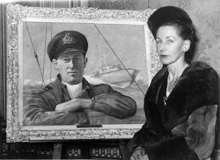
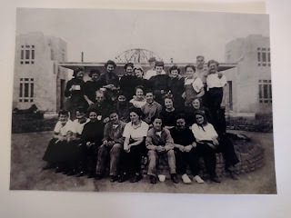
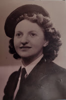

De-censoring, un-editing, dis-interring and resisting the temptation to airbrush
 |
| Catherine Hichens with a portrait of her husband by Peter Scott |
{kind=link}
Rather late in the process of preparing the HMS Beehive edition of We Fought Them in Gunboats (WFTIG to its friends) I decided that it felt a little like restoring an old painting – scraping off accumulated layers of nicotine, dust or flaky varnish to reveal the freshness and accuracy of the original. I imagined seeing as if through new eyes, being transported back to the artist’s studio or the picture’s first unveiling, spotting fine detail that had been buried under the residue of time.
But still the comparison feels relevant. Robert Hichens was a RNVR gunboat officer, killed in action in April 1943. He was writing WFTIG when he died, determined to record ‘as true a picture as possible of the life of a gunboat officer’. His widow, Catherine, had the book typed and sent it to the Admiralty. They offered to keep it safely for her, until hostilities were at an end, (cf https://authorselectric.blogspot.com/search?q=Hush+most+secret) Catherine knew this was not what her husband had intended. She found a potential publisher and continued to insist. Finally the Admiralty relented and the book was published – but with 88000 words of text reduced by the censor to 55000. Robert Hichens had been widely admired and was deeply mourned.
That 1944 version of his book can be found on many WW2 veterans shelves or passed on to their descendants. That's how I first read it. But it's not the book he actually wrote.
My first task – de-censoring – was laborious;
whole pages had been struck out and many small details obliterated. Putting the
big cuts back has had a dramatic effect – the balance has shifted from
feats of high-octane daring, to the personal clashes, official idiocies,
setbacks, innovation and determination that built the foundation for success.
Restoring the small details was almost more rewarding.
Often these were the specifics of location and technical detail which made the narrative
so much more actual. They laid mines HERE, they lay in wait HERE, official refusal
to listen cost THIS MANY lives. Sometimes the replacement of a single phrase opens
a whole new aspect. There’s a report of an unmemorable patrol in the 1944 edition.
Most of these early patrols were not
memorable, but I recollect clearly one of the last of the patrols under way
because it was such an uncomfortably rough night. We were patrolling up and
down to seaward of some MLs, who had a number of decidedly senior officers on
board, four ring Captains and such like, experimenting withenormous flare-carrying balloons.
It blew up to a force 4 to 5 north-westerly wind and on one leg of the patrol
we were bumping straight into it. I remember saying some pretty succinct things
to Boffin about flare-carrying
balloons and gunboats generally by the time we had done our eighth flog
back into it, covered in spray, with the frequent, drastic jarring and banging.
What’s omitted are the words ‘experimenting with flare-carrying balloons’. This tedious patrol was connected with preparation for one of the weirder offensive actions being carried out from the Suffolk coast. When the wind was set fair for occupied Europe, groups of HMS Beehive Wrens were tasked with letting off hydrogen-fuelled weather balloons, either loaded with incendiary devices or training 80m wire rope, intended to catch round power cables or ignite forest fires. More than 99,000 of these were set off from the old established Felixstowe Ferry Golf Club between 1942-44. It was named Operation Outward and was a distinct success, though not much mentioned officially, as being one of Churchill’s more ‘ungentlemanly’ ideas – (and run by women).
 |
| Felixstowe 'Boom Defence' Wrens -- off duty |
{kind=link}
 |
| Wren Edna Davies Her job was to collect bottles of phosphorous, attach them to a hydrogen balloon then release them to blow across to Europe and cause power cuts or fires. |
{kind=link}
While I was de-censoring and un-editing, I was also spending time in the Felixstowe Museum, very close to the site of the former HMS Beehive Coastal Forces base in Felixstowe Dock, ‘disinterring’ old papers with the Museum's archivist. He brought out other scraps of narrative, apparently unremarkable on their own, but vividly meaningful when put into context by Hichens’ experience and the wider community of the base. The second part of this book will, for instance, carry four weeks of a motor torpedo boat's war diary -- a fantastically rare survival as these were all destroyed after the war as taking up too much space in the National Archives. It will also include description of the base by Ian Trelawny, a MTB (Motor Torpedo Boat) officer there, Later Ian would become a major architect of the success of today's Port of Felixstowe. Then he was just another young man, living a brave and intense existence and recovering from a serious wound. We came across a paragraph where he mentioned 'the plump cheeks' of the boats' crew Wrens in their tight seaman's trousers. Should we get out our own blue pencils and cut out the phrase? Or paint in some verbal veil. Not if we wanted to present a truthful picture of young men in wartime.
Occasionally the secrets in Hichens' narrative are buried too deep. De-censoring
reveals several references to ‘NID work’. That’s work on behalf of the Naval Intelligence
Division, probably ferrying or supplying Resistance agents across the North Sea to Holland and
Belgium. This is a period (1942) when – in the Netherlands at least – local Resistance
networks had been completely infiltrated by the Abwehr. SOE (Special Operations Executive) agent after SOE
agent, parachuted in by the RAF, were immediately captured and almost all of them died. But what about
these sea-borne missions from Felixstowe and Great Yarmouth? Hichens (in a censored passage) describes them as almost
‘routine’ tasks. How frequent were these missions really? Who was being transported – and did they survive?
Here the museum archive is blank. Some of the journeys were on behalf of the Contact Holland initiative, run unofficially for Queen Wilhemina, and quite separate from the SOE or the official activity of the Dutch Government in Exile. Agents danced in the Felix Hotel -- now Harvest House in Felixstowe where this new edition will be launched on June 24th. But were there possibly
many more secret crossings? In this case, scraping away the obfuscation has revealed, not
removed, an intriguing puzzle.
Hichens’ book was first published in 1944, then re-released in 1955, in an edited,
rather than a censored version. The editing was undertaken by David James, a friend, fellow-officer
and admirer of Hichens. He adds punctuation and tidies sentences but also
leaves out large sections of original text which he describes as ‘irrelevant’. These are of two sorts: passages where Hichens as an intelligent, keen volunteer officer is
at loggerheads with the obstinate and bullying naval Captain of the HMS Beehive base and also long sections where Hichens describes the conversations he and other officers had, as they drank gin in the
afternoons between writing up reports and seeing to their boat maintenance. They would then getting a few hours sleep before setting out into the dark for likely
violent North Sea action. In these 'gin sessions' they gossip about other people on the base, grumble
about the Admiralty, tell poor quality jokes about the regular Navy and Army (these
men are all volunteers). They discuss politics, their latest reading, wallet-lining frauds by contractors and the criminal laziness (it seems to them) of the unionised dockers. I can understand
why David James, as editor, felt these conversations were not part of the repertoire
of a hero. Even I flinched when Hichens
suggests that the authorities might try shooting one of the dockers to persuade
the others to work.
All such ‘gin sessions’ have been fully reinstated.
They seem hugely valuable to me, as a record of the sort of conversations that
20- 30-year olds enjoyed, in the interval of violent action. Might Hichens have removed these sections if he’d lived to edit his own book?
Who knows? This is a honest, immediate record of experience and feeling in 1942. It's not necessarily easy reading in 2023. I shared the temptation
to airbrush on occasion – there's a passage in chapter one for example when Hichens introduces his First Lieutenant
‘Boffin’ Campbell as a ‘fire-eater’ who ‘hates Germans and nothing gives him
greater pleasure than killing them.’ The Admiralty censor let this through and
so did David James. Today it makes me wince.
Of course it must remain. Hatred is intrinsic to war. Fighters go out to kill, not just to avoid being killed. WFTIG is special because it was written with commitment and passion by a man who didn’t
expect to survive the war and didn’t. It's written in the midst of
action, untouched by personal afterthoughts, reputation management or the public expectations of heroism.
De-censored, un-edited and put into the context of Felixstowe's HMS Beehive base, it is, as Robert Hichens intended
‘as true a picture as possible of the life of a gunboat officer’.
{kind=link}
We Fought Them in Gunboats, the HMS Beehive edition will be published at the Felixstowe Book Festival on June 24th 2023. The main speaker will be Antony Hichens, Robert’s younger son, five years old and living in Felixstowe when his father was killed in 1943.
You can book tickets here. https://felixstowebookfestival.co.uk/events/we-fought-them-in-gunboats-the-new-hms-beehive-edition